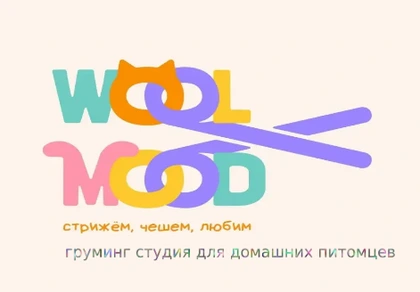
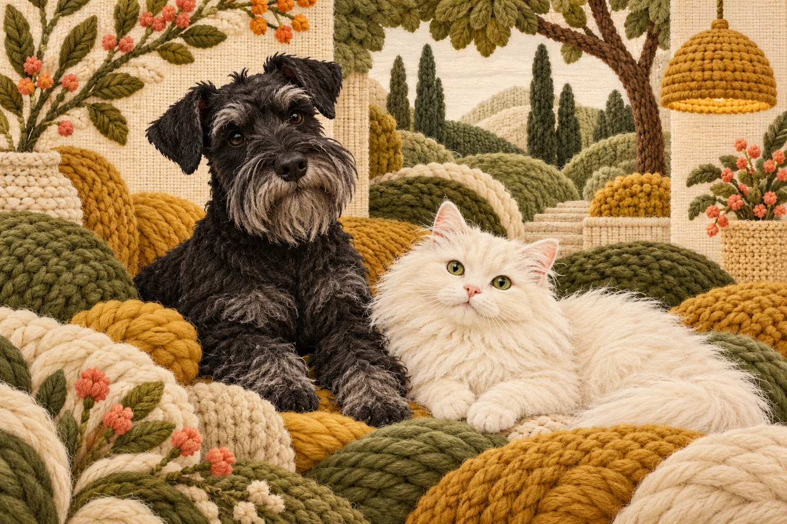

Шпиц: комплекс
В опубликованном комплексе — мытьё, сушка, вычёс и оформление шерсти.

Шерстяное настроениеГруминг · МоскваШерстяное настроение — груминг-студия на Дорогобужской, 3. Уход за небольшими собаками и кошками с вниманием к деталям.

В породных комплексах студии расписаны этапы — от мытья и сушки до формы лап и стрижки. Это помогает выбирать уход осознанно и заранее обсуждать дополнительные процедуры.
Студия опубликовала, что больше не принимает собак крупных пород. Перед записью сообщите породу и вес: мастер подтвердит подходящий формат. Разбор колтунов в опубликованные комплексы не входит.
Ближе познакомиться с салоном ↗Выберите тип шерсти. Покажем, какие вопросы стоит обсудить с грумером перед записью.
Поговорим о подходящем уходе.
Порода, вес и состояние шерсти помогают уточнить состав процедуры. Важные детали обсудим до визита.
В опубликованном комплексе — мытьё, сушка, вычёс и оформление шерсти.
Породный комплекс с модельной стрижкой. Разбор колтунов считается отдельно.
Опубликованный комплекс со стрижкой под машинку.
Прайс карточки обновлён 2 октября. Итоговую стоимость подтвердите у мастера.
Без сложной подготовки. Соберите несколько деталей, которые помогут мастеру лучше понять вашего питомца.
Студия сообщила, что больше не принимает собак крупных пород. Перед записью обязательно уточните породу и вес.
От выбранного комплекса, размера питомца и состояния шерсти. Дополнительную работу, в том числе разбор колтунов, стоит согласовать до начала ухода.
Расскажите об этом заранее: какие звуки или действия тревожат, как проходил предыдущий визит. Подходящий формат и возможности студии обсудите до подтверждения времени.
В официальном профиле салона и на карте. Художественные животные на этом сайте — иллюстрации, а не фотографии выполненных стрижек.
Кнопка записи откроет контакт или действующий сервис салона. Свободное время и запись подтверждаются именно там.
Запись подтвердит салон в своём сервисе или при личном обращении.
Дорогобужская ул., 3
График, состав процедур и стоимость уточняйте при записи.